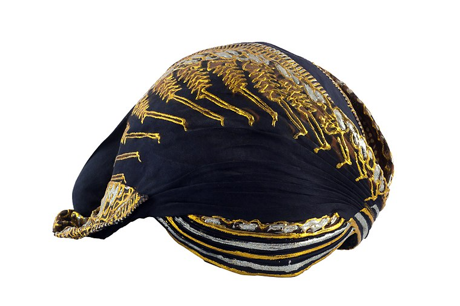

Navigation
- Main page Contents Featured content Current events Random article Donate to Wikipedia Wikipedia store Interaction Help About Wikipedia Community portal Recent changes Contact page Tools What links here Related changes Upload file Special pages Permanent link Page information Wikidata item Print/export Create a book Download as PDF Printable version In other projects Wikimedia Commons MediaWiki Meta-Wiki Wikispecies Wikibooks Wikidata Wikinews Wikiquote Wikisource Wikiversity Wikivoyage Wiktionary
Languages
- Languages العربية Български Bosanski Català Čeština Dansk Deutsch Eesti Ελληνικά Español Esperanto Euskara فارسی Français Galego 한국어 Hrvatski Bahasa Indonesia Italiano עברית ქართული Latviešu Lietuvių Magyar Bahasa Melayu Nederlands 日本語 Norsk Norsk nynorsk Polski Português Română Русский Simple English Slovenčina Slovenščina Српски / srpski Srpskohrvatski / српскохрватски Suomi Svenska ไทย Türkçe Українська Tiếng Việt 中文 Complete list
Main Page
Wikipedia
Welcome to Wikipedia
the free encyclopedia
- arts
From today
Lilias Armstrong (1882–1937) was an English phonetician. Her book on English intonation, written with Ida C. Ward, was in print for fifty years. She also provided some of the first detailed descriptions of tone in Somali and Kikuyu. Armstrong grew up in Northern England. She graduated from the University of Leeds, where she studied French and Latin. She taught French in an elementary school in the London suburbs before joining the University College Phonetics Department, headed by Daniel Jones, where she was eventually appointed as a reader. Her works include the 1926 book A Handbook of English Intonation (co-written with Ward), the 1934 paper "The Phonetic Structure of Somali", and the book The Phonetic and Tonal Structure of Kikuyu, published posthumously in 1940. She was the subeditor of the International Phonetic Association's journal Le Maître Phonétique for more than a decade, and was praised in her day for her teaching. Jones wrote in his obituary of her that she was "one of the finest phoneticians in the world". (Full article...)
- sdasda
Did you know?
fsdfsdfsdfsdgdfg
- sdasda
In the news
- In darts, Rob Cross (pictured) wins the PDC World Championship on his debut.
- George Weah is elected President of Liberia.
- Peruvian President Pedro Pablo Kuczynski pardons jailed ex-president Alberto Fujimori. Typhoon Tembin sweeps through the southern Philippines, killing more than two hundred people and leaving dozens of others missing.
- HMAS AE1, a Royal Australian Navy submarine lost at sea in 1914, is located off the Duke of York Islands.
- sdasda
On this day
fsdfsdfsdfsdgdfg
- sdasda
today's feature picture
fsdfsdfsdfsdgdfg
- sdasda
other areas of wikipedia
- Community portal – Bulletin board, projects, resources and activities covering a wide range of Wikipedia areas.
- Help desk – Ask questions about using Wikipedia.
- Local embassy – For Wikipedia-related communication in languages other than English.
- Reference desk – Serving as virtual librarians, Wikipedia volunteers tackle your questions on a wide range of subjects.
- Site news – Announcements, updates, articles and press releases on Wikipedia and the Wikimedia Foundation.
- Village pump – For discussions about Wikipedia itself, including areas for technical issues and policies.
Wikipedia's sister projects
Wikipedia is hosted by the Wikimedia Foundation, a non-profit organization that also hosts a range of other projects:
| Commons Free media repository |
MediaWiki Wiki software development |
Meta-Wiki Wikimedia project coordination |
|||
| Wikibooks Free textbooks and manuals |
Wikidata Free knowledge base |
Wikinews Free-content news |
|||
| Wikiquote Collection of quotations |
Wikisource Free-content library |
Wikispecies Directory of species |
|||
| Wikiversity Free learning materials and activities |
Wikivoyage Free travel guide |
Wiktionary Dictionary and thesaurus |